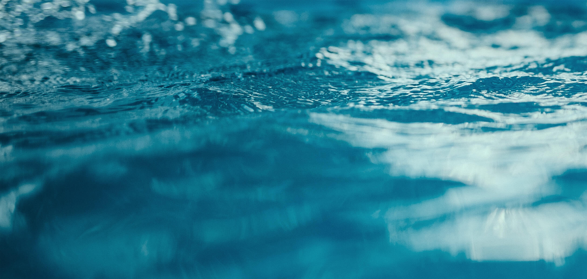

FLIS topics
Water
story
Where does your water come from? Understanding water supply
Table of contents
3
The state of the EU’s waters today
- Increasing consumption and ecosystem stress (Global megatrend 8 - growing pressures on ecosystems)
- Changing populations and demand for water (Global Megatrend 1 - Diverging global population trends)
- Urbanisation, land take and the impact for water (Global Megatrend 2 - Living in an urban world)
- Sidebar: A tale of seven cities - how changing diets in Dutch cities would impact water use
5
How does flooding affect human health?
- Pollution, pressure and progress (Global Megatrend 10 - Increasing environmental pollution)
- Meeting the challenges posed by Global Megatrends
- Current and proposed EU policy
- Assessing the state of Europe’s water bodies
- Legislation prior to the Water Framework Directive
- The Water Framework Directive
- Limiting pollution from agriculture and industry
- River Basin Management Plans
- Technological options
- Smart grids
- Desalination
- Foresight example
- An example of national best practises: Better water management in Switzerland
- Introduction: Climate change in Switzerland
- A strategy centered around coordination
- Multi-sector interfaces: Reducing conflict by working together